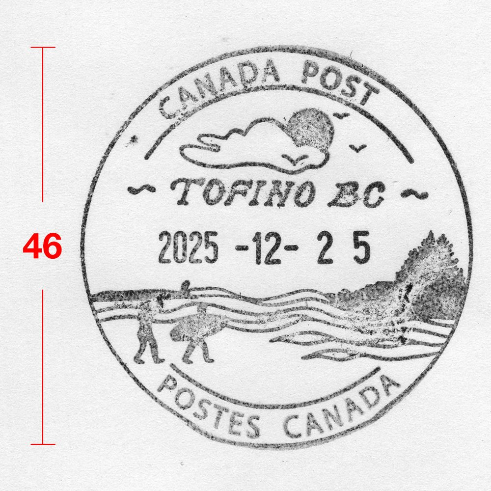

Tofino PO pictorial cancel
Sun, clouds, beach, waves, trees, surfers
- Status
- Active
- Run dates
- 2024-08-21 to 2035-12-31
- Design
- sun, clouds, beach, waves, trees, surfers
- Ink colour
- Black
- Designer
- Unknown
- Post office
- Tofino PO
161 First St
Tofino, BC
V0R 2Z0 - Subjects
- nature, ocean, beach, wave, tree, surfing, surfer, human
Collect it by mail. Send your stamped covers, with a stamped return envelope, to the post office address above. How to collect pictorial cancels by mail · en français
 Campbell River STN AFirst Nation
Campbell River STN AFirst Nation Lantzville POEagle on a tree trunk
Lantzville POEagle on a tree trunk Duncan STN MainTotem
Duncan STN MainTotem Cobble Hill POGrapes
Cobble Hill POGrapes